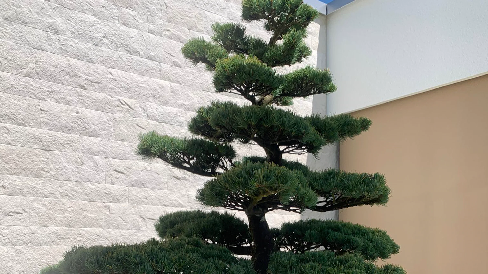
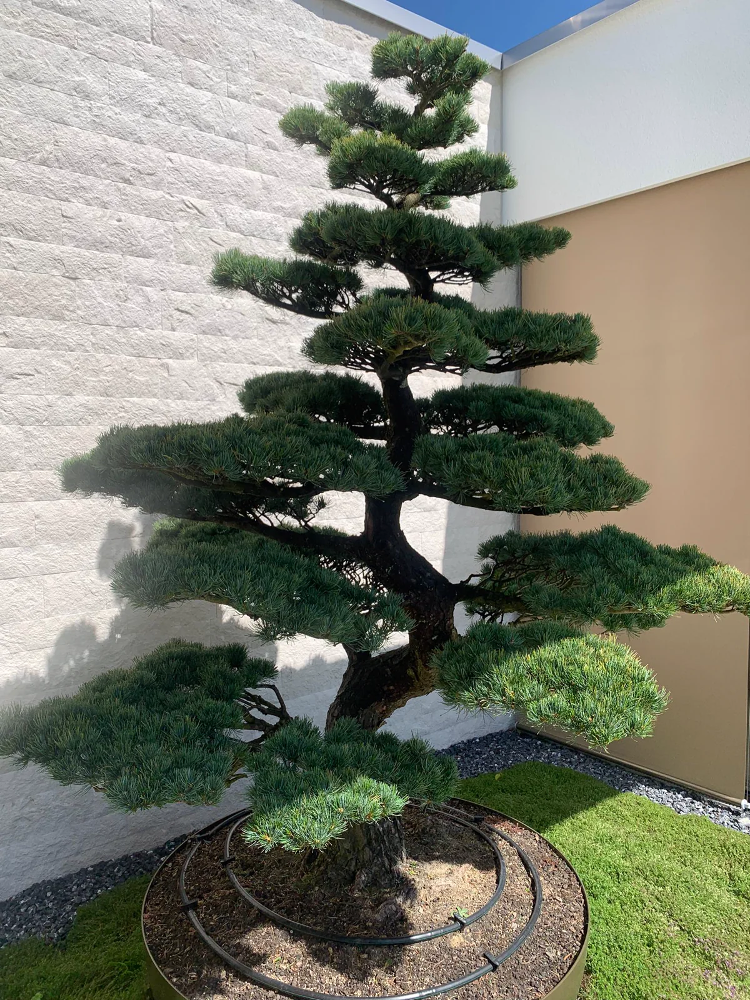
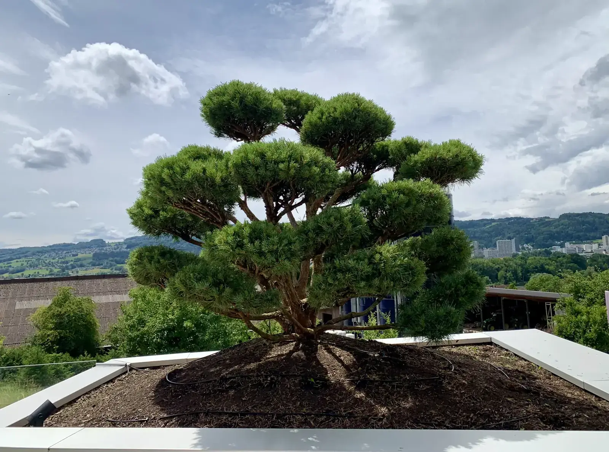
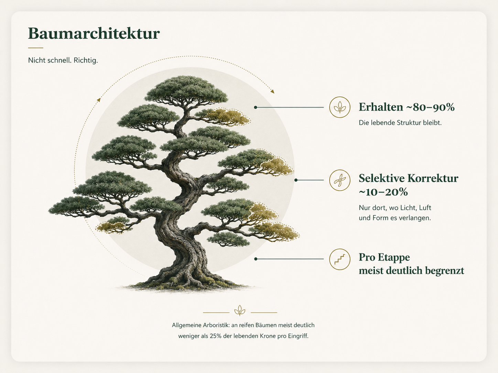
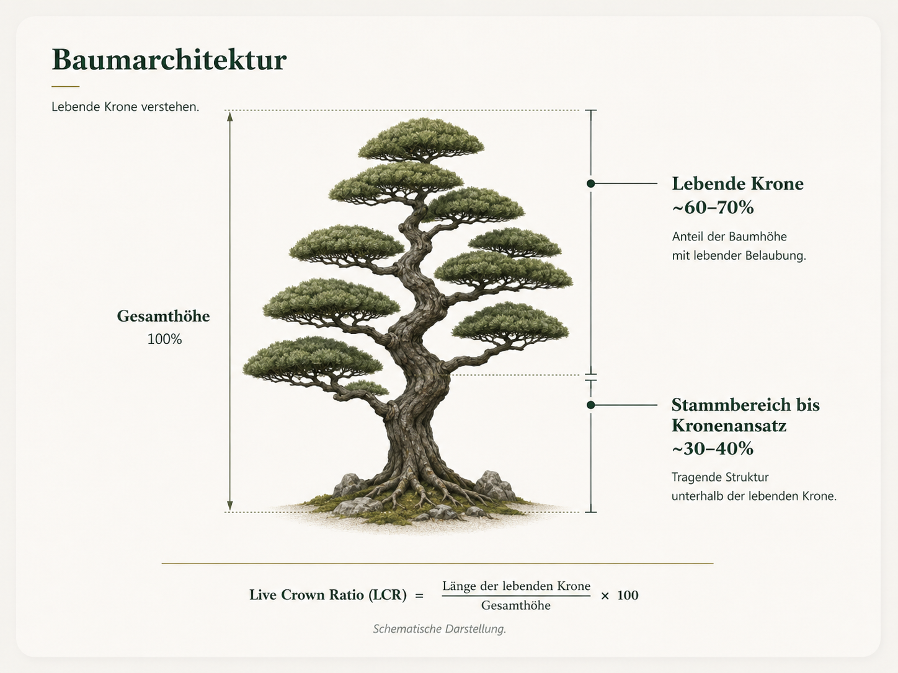
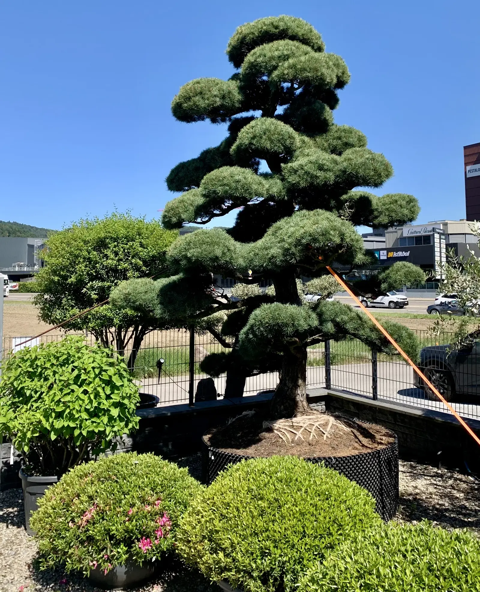
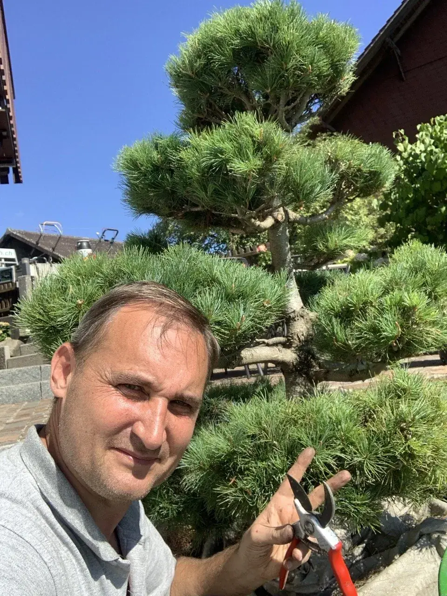

Niwaki і японська деревна архітектура.
Зі швейцарською точністю.
Швейцарська якість у резонансі з японською філософією.
Швейцарська довершеність зустрічається з японською філософією. Я не просто ріжу дерева - я створюю живі скульптури через точну майстерну ручну роботу для форми, сили й позачасової естетики.
Я формую і доглядаю Niwaki, садовий бонсай, японські клени, сосни і хвойні у регіоні Цюриха так, щоб дерево роками зберігало форму, силу і здоров'я.
Я формую цінні дерева в регіоні Цюриха: чиста ручна робота для форми, сили й здоров'я.
Правильний зріз повертає дереву повітря, світло і спокій.
Порівняння Pinus sylvestris 'Watereri': ліворуч робочий стан із захищеною кореневою зоною, праворуч готова форма Niwaki - без драбини і без робочого інвентаря на фото після.


Сад - це найтихіша кімната дому.
Niwaki доглядають не лише заради акуратності. Він змінює вид із дому: ранкова кава, вечір на терасі, гості, які бачать спокійний, точний і живий сад.
Тому я не працюю заради швидкого ефекту. Цінне дерево після зрізу не має виглядати чужим. Воно має виглядати так, ніби ця форма вже жила всередині.

Закони природи не можна ігнорувати.
Спочатку коричневі голки. Потім сухі гілки. Дерево втрачає одну гілку, потім другу, а згодом і форму. Часто причина проста: дерево різали швидко, дешево і без розуміння його енергії.
Відрізати гілку можна за секунду. Виростити нову - це роки.



Зі звичайного дерева можна зробити надзвичайну садову форму.
Майстер не починає з ножиць. Спершу він читає рух стовбура, опорні гілки, порожні місця, світлові вікна і те, як сила проходить через крону.
Я називаю це деревною архітектурою, художньою обрізкою і корекцією структури крони. Робота йде не за шаблоном, а за деревом: що треба залишити, що розвантажити і яку лінію можна побудувати за наступні роки.
Як я працюю →Три основні напрями - без компромісу.
Niwaki, японські клени і хвойні до 3 м; більші дерева - після узгодження.
Садовий бонсай
Формування садових дерев: сосна (Pinus), тис (Taxus) і ялівець (Juniperus). Крона відкривається для світла, повітря і довгої форми.
Детальніше про NiwakiЯпонські клени
Японський (віялолистий) клен (Acer palmatum) і розсіченолистий клен: сезонний ручний догляд, суха деревина, мох і грибкові ризики.
Догляд за японським кленомХвойні дерева
Сосна (Pinus), тис (Taxus baccata), ялівець (Juniperus), ялиця (Abies) і ялина (Picea). Чистий ручний зріз.
Формування сосни та хвойнихВаше персональне бачення дерева - безкоштовно.
Надішліть фото дерева. Ви отримаєте мою чесну оцінку і напрям, як дерево може виглядати через три роки, якщо його варто брати в роботу.

Здоров'я починається під землею.
Як і з фундаментом будинку, усе починається під землею. Правильний ґрунт - акадама, відповідна кислотність (pH 5,5-6,5), перевірені субстрати - це основа здоров'я.
Більше про ґрунт і коріння →
Де я працюю.
Основний регіон - кантон Цюрих. Також Цуг, Люцерн, Аргау, Швіц, Шаффгаузен, Аппенцель і Гларус. Решта Швейцарії - за домовленістю. Заради незвичайних дерев я готовий їхати далі.
Часті питання про нівакі та японський догляд за деревами.
Як врятувати мій нівакі або японський клен?
Надішліть три фото: усе дерево, проблемну зону і крупний план. Перша оцінка - безкоштовна.
Чому моє дерево втрачає форму?
Найчастіше було проігноровано розподіл енергії в кроні. Тоді всередині накопичуються вологість, суховіття і неправильні пагони.
Скільки коштує японський догляд за деревами в регіоні Цюриха?
Робота від 110 CHF/год, виїзд від 90 CHF. Зустріч на місці - після фото-діагностики.
Зі звичайного дерева можна зробити виразну садову форму.
Надішліть три фото. Я подивлюся, яке художнє формування дерева, корекція структури крони або послідовність догляду має сенс - без швидкого зрізу і без фальшивих обіцянок.